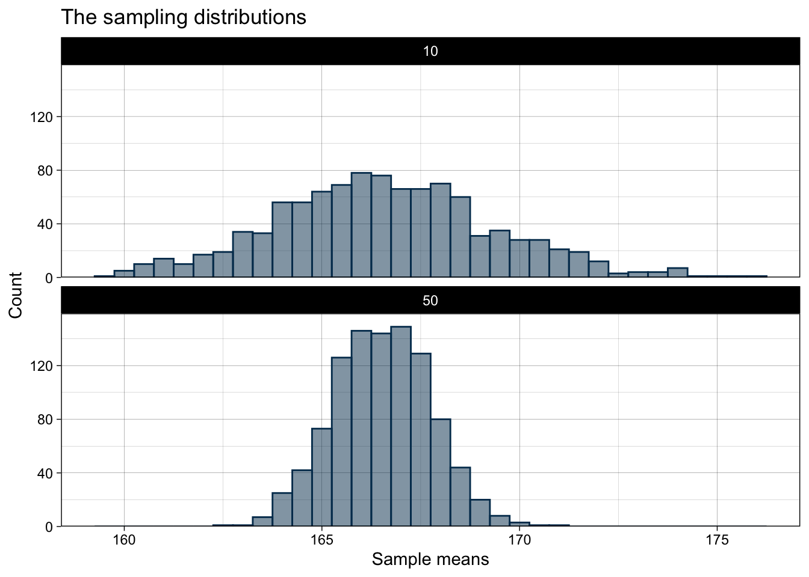

library(tibble)
library(ggplot2)Estimating average height of EUF students - a MCS
Solution to the exercise
Task:
Suppose you are interested in the average height of the students at the European University Flensburg and you are wondering what a good sample size would be. Suppose further that the data set
DataScienceExercises::EUFstudentscontains the result of a census of EUF students. Study the process of sampling by carrying an MCS in which you draw random samples of size10and50from this population. To do this, conduct an MCS with1000repetitions and check what difference it makes to increase the sample size.
First, make sure you understand which steps are necessary to solve this task. Here, you need to:
- Read in and understand the data set
DataScienceExercises::EUFstudents - Draw a random sample from this data set and compute the average height of students in this sample
- Design a MCS in which this draw is executed 1000 times for two different sample sizes
- Analyze the results by studying the mean and variance of the estimates.
Once you have set up such a plan you can proceed step-by-step.
1 Read in and understand the data set
It is always a good idea to have a shortcut to your data:
student_data <- DataScienceExercises::EUFstudentsThen, inspect the data:
head(student_data)# A tibble: 6 × 2
Gender Height
<chr> <dbl>
1 female 159.
2 female 161.
3 female 173.
4 female 163.
5 female 164.
6 female 174.We see that there are two columns. For the purpose of this task, only the column Height is relevant.
2 Draw and analyze a random sample from this data set
To draw a random sample of size 10, we can use the function sample() as follows:
sample(x = student_data[["Height"]], size = 10) [1] 158.0240 164.2462 155.5370 193.4313 173.8579 182.2533 159.8923 166.3148
[9] 166.3390 167.3599Note that sample() takes as input an atomic vector. Thus, you need to extract the column Height as a vector from the underlying data set before drawing the sample!
But since we are interested in the average height of the students (our population parameter of interest), we need to compute this parameter also for our sample:
mean(sample(x = student_data[["Height"]], size = 10))[1] 168.4152We now need to embed this process into a MCS!
3 Design a MCS
Although we need to run our MCS for 1000 times, it is a good idea to first design it using fewer iteration. In any case, we should follow the standard procedure of developing an MCS.
First, create an output container with as many NAs as we will have repetitions. Note that since we collect two kinds of results - one for sample size 10, one for sample size 50 - we need two containers:
n_repetitions <- 5 # Start with 5 iterations
output_container_n10 <- rep(NA, n_repetitions)
output_container_n50 <- rep(NA, n_repetitions)
output_container_n10[1] NA NA NA NA NASecond, think about the looping sequence. In our case, we want to repeat the MCS for n_repetitions times, so the looping sequence becomes:
for (i in seq_len(n_repetitions))Third, add the action body. Here we use the code to draw a sample from above and just integrate it into the loop:
for (i in seq_len(n_repetitions)){
output_container_n10[i] <- mean(sample(
x = student_data[["Height"]], size = 10))
output_container_n50[i] <- mean(sample(
x = student_data[["Height"]], size = 50))
}Finally, to make our results fully reproducible despite involving random processes, we use the function set.seed().
In all, this leads to the following code:
n_repetitions <- 5 # Start with 5 iterations
output_container_n10 <- rep(NA, n_repetitions)
output_container_n50 <- rep(NA, n_repetitions)
set.seed(123)
for (i in seq_len(n_repetitions)){
output_container_n10[i] <- mean(sample(
x = student_data[["Height"]], size = 10))
output_container_n50[i] <- mean(sample(
x = student_data[["Height"]], size = 50))
}We can test this by running the code and inspect the output container:
output_container_n10[1] 166.1539 163.8509 167.5664 168.1203 167.5359Okay, this makes sense. So now we can set n_repetitions to 1000 and run the MCS as desired.
- Analyze the results by studying the mean and variance of the estimates
To compare the results, we now look at the resulting sampling distributions. We can do so visually, but for the task at hand, just computing the mean and standard deviation is sufficient:
n_repetitions <- 1000
output_container_n10 <- rep(NA, n_repetitions)
output_container_n50 <- rep(NA, n_repetitions)
set.seed(123)
for (i in seq_len(n_repetitions)){
output_container_n10[i] <- mean(sample(
x = student_data[["Height"]], size = 10))
output_container_n50[i] <- mean(sample(
x = student_data[["Height"]], size = 50))
}
mean_10 <- mean(output_container_n10)
mean_50 <- mean(output_container_n50)
sd_10 <- sd(output_container_n10)
sd_50 <- sd(output_container_n50)
tibble::tribble(
~`Sample size`, ~Mean, ~Variation,
#--|--|----
10, mean_10, sd_10,
50, mean_50, sd_50
)# A tibble: 2 × 3
`Sample size` Mean Variation
<dbl> <dbl> <dbl>
1 10 167. 2.77
2 50 167. 1.23We see that the mean is very similar, meaning that on average both sample sizes are equivalent. But we also see that the larger sample shows much less variation and the estimates from the single samples are more concentrated around the true value. Thus, having larger samples makes our estimations more precise!
4 Addendum: Visualizing the results
If you wanted to visualize the results, you could proceed as follows. First, because ggplot() requires tibbles as input, you first need to put your results into a tibble:
result_tibble <- tibble::tibble(
"sample_mean" = c(output_container_n10, output_container_n50),
"sample_size" = c(rep(10, length(output_container_n10)),
rep(50, length(output_container_n50)))
)
head(result_tibble)# A tibble: 6 × 2
sample_mean sample_size
<dbl> <dbl>
1 166. 10
2 164. 10
3 168. 10
4 168. 10
5 168. 10
6 169. 10sampling_plot <- ggplot(data = result_tibble, aes(x=sample_mean)) +
geom_histogram(alpha=0.5, color="#00395B", fill="#00395B", binwidth = 0.5) +
scale_y_continuous(expand = expansion(add = c(0, 10))) +
facet_wrap(~sample_size, nrow = 2) +
labs(
x = "Sample means",
y = "Count",
title = "The sampling distributions") +
theme_linedraw()
sampling_plot
Here, the similar mean but very different variance become apparent!